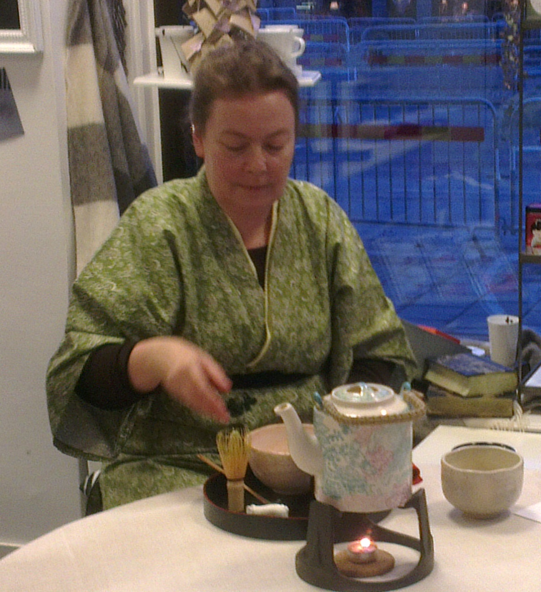
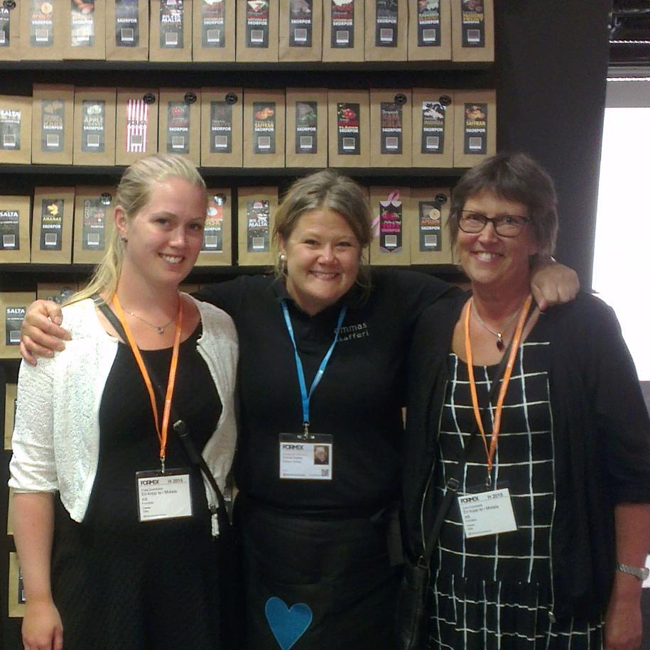

Den 7/11 hade vi samlat ett gäng te-entusiaster för en teceremoni i butiken. Med oss fanns Gunnel Hillås som är medlem i det Japanska thesällskapet. Gunnel vispade te till var och en av oss och delade under tiden med sig av sin digra kunskap inom ämnet. Den form av Chado (teets väg) som vi presenterades för kallas för Ryakubon (bricka) och är en mer informell form av teceremoni. Vi fick även en snabbkurs i artighet då det som en del av ceremonin ingår att en ber om ursäkt till personen som sitter till vänster att en äter och dricker före denne, och berättar för personen till höger att en nu ska dricka samma te som denne. Det blev till slut en hel del fraser att hålla reda på men som tur var så påpekade Gunnel att gästen aldrig kan ha fel så det gjorde inte så mycket om en glömde både ett och annat tack och förlåt.
Till teet serverades en kaka gjord på bönor som kokats med socker. Inget mina västerländska smaklökar är van vid men det var sannerligen sött, vilket var en välkommen kontrast till det beska teet. Det te som serverades var ett matcha-te där bladen på te-busken ångats och sedan malts till ett pulver. Pulvret vispas sedan upp i varmt vatten en kopp i taget.
En utgångspunkt för teceremonin är Ichigo-Ichie, vilket betyder att det är ett unikt tillfälle och att det aldrig kommer igen. Det manar deltagarna att vara i nuet och stämningen i butiken var väldigt lugn och harmonisk. Ett välbehövligt meditativt inslag i en för många av oss hektisk vardag.
Vi hittade Emma som bakar våra underbart goda skorpor från Emmas Skafferi på Formexmässan.

Receptet på vårt populära iste
1 l vatten
1/4-1/2 dl te
1/2 dl rårörsocker
1/2 dl pressad citron
Koka upp vatten och häll i tebladen. Låt dra ca 4 min. Sila bort bladen och blanda ner socker och citron efter smak. Kyl och servera med is och ev myntablad.
Till vårt iste använde vi rooibos syrliga Ginger eller Grön frisk och het. Prova gärna ditt egna favoritte!